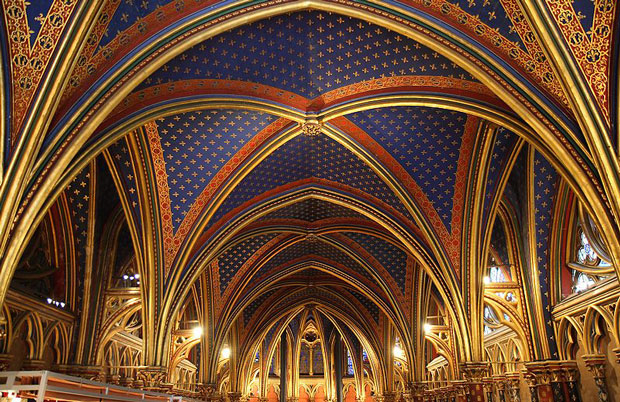

Paris houses many of history's more stunning spiritual relics-- cathedrals and chuches that stand today as breathtaking testimonials to a complex heritage of Christianity that dominated in Paris from the fall of the Roman Empire to the French Revolution. Many of these majestic cathedrals and churches fell into near-ruin in the wake of the Revolution, but revived interest in the 19th century brought about their restoration.

La Sainte-Chapelle (French pronunciation: [la sɛ̃t ʃapɛl], The Holy Chapel) is the only surviving building of the Capetian royal palace on the Île de la Cité in the heart of Paris, France. It was commissioned by King Louis IX of France to house his collection of Passion Relics, including the Crown of Thorns - one of the most important relics in medieval Christendom. Begun some time after 1239 and consecrated on the 26th of April 1248, the Sainte-Chapelle is considered among the highest achievements of the Rayonnant period of Gothic architecture. Although damaged during the French revolution and heavily restored in the 19th century, it retains one of the most extensive in-situ collections of 13th century stained glass anywhere in the world.
The Sainte-Chapelle or 'Holy Chapel', in the courtyard of the royal palace on the Île de la Cité (now part of a later administrative complex known as La Conciergerie), was built to house Louis IX's collection of precious relics of Christ, which included the Crown of Thorns, the Image of Edessa and some thirty other items. Louis purchased his precious Passion relics from Baldwin II, the Latin emperor at Constantinople, for the exorbitant sum of 135,000 livres, though this money was actually paid to the Venetians, to whom the relics had been pawned. The relics arrived in Paris in August 1239, carried from Venice by two Dominican friars and for the final stage of their journey they were carried by the King himself, barefoot and dressed as a penitent (a scene depicted in the Relics of the Passion window on the south side of the chapel). The relics were stored in a large and elaborate silver chest, the Grand-Chasse, on which Louis spent a further 100,000 livres. The entire chapel, by contrast, cost 40,000 livres to build and glaze (until it was completed in 1248 the relics were housed at chapels at the Château de Vincennes and a specially built chapel at the Château de Saint-Germain-en-Laye). In 1246, fragments of the True Cross and the Holy Lance were added to Louis' collection, along with other relics. The chapel was consecrated on 26 April 1248 and Louis' relics were moved to their new home with great ceremony.
As well as serving as a place of worship, the Sainte-Chapelle played an important role in the political and cultural ambitions of King Louis and his successors. With the imperial throne at Constantinople occupied by a mere Count of Flanders and with the Holy Roman Empire in uneasy disarray, Louis' artistic and architectural patronage helped to position him as the central monarch of western Christendom, the Sainte-Chapelle fitting in to a long tradition of prestigious palace chapels. Just as the Emperor could pass privately from his palace into the Hagia Sophia in Constantinople, so now Louis could pass directly from his palace into the Sainte-Chapelle. More importantly, the two-story palace chapel had obvious similarities to Charlemagne's palatine chapel at Aachen (built 792-805) - a parallel that Louis was keen to exploit in presenting himself as a worthy successor to the first Holy Roman Emperor.